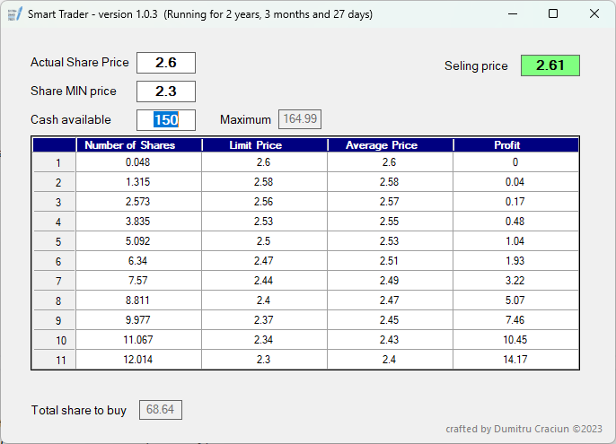

SmartTrader - Desktop Data Visualization & Calculation Tool
SmartTrader is a Windows Forms application I developed to explore dynamic data calculation, visualization, and UI responsiveness. While originally designed for personal stock simulations, the program demonstrates my skills in C# development, grid-based data display, real-time calculations, and configuration management.

- Implements dynamic “pyramid” calculations, showing how numerical inputs evolve step by step.
- Demonstrates interactive user interface design with DataGridView updates based on user input.
- Handles multiple input parameters and recalculates results instantly, ensuring correctness and responsiveness.
- Features file-based settings persistence via config.ini for saving and loading program states.
- Uses robust rounding, conditional logic, and budget constraints to manage calculated outputs.